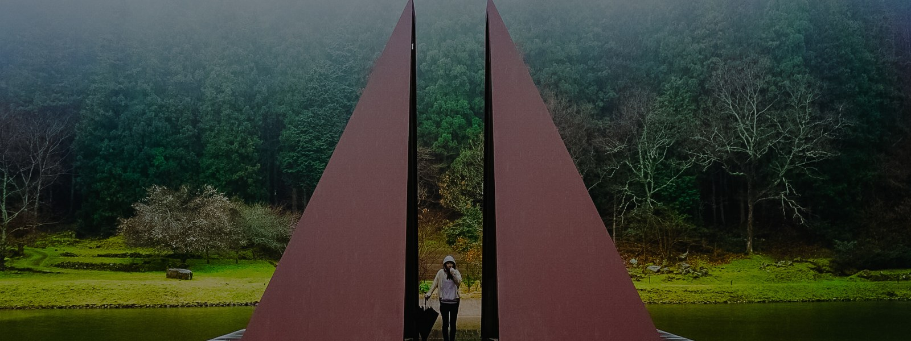

— なぜ、伝わらないのか？
見た目の問題ではありません。
「届けたい体験」と「実際に届いている体験」の間に、
ズレが生まれているのです。
— 02 / Self Check
当てはまるものを選んでみてください。
LPやサイトを作ったのに、反応が薄い
社内ポータルやツールが、なかなか使われない
コンセプトはあるのに、現場やユーザーに浸透しない
ユーザーの行動が、想定とズレている
良いプロダクトなのに、なぜか選ばれない
3つ以上当てはまる場合、デザインではなく構造的な問題が起きている可能性が高いです。
— 03 / Insight
— あなたが届けたい体験
価値・意図・感情・行動の変化
— ユーザーが受け取っている体験
情報・印象・ノイズ・離脱
多くの場合、作り手はきちんと考えています。
問題は「考えていること」がユーザーに届く形になっていないことです。
デザインを整えても、このズレが解消されない限り、伝わりません。
— 04 / Approach
届けたい価値を、ユーザーが理解し行動できる形に変換する。
それが体験翻訳です。「かっこよくする」のではなく、「伝わる構造を作る」こと。
— ズレの発見
現状の体験を観察し、意図と実態のギャップを具体的に特定します。感覚的な問題を構造として見える化する作業です。
— 体験の再設計
ズレを解消する表現・構造・導線を設計します。美しさではなく、「伝わること」「動くこと」を基準にします。
— 05 / Process
ズレの発見
現状の体験を観察・分析。「届けたい体験」と「届いている体験」の差を特定します。
構造の整理
情報設計・導線・コンテンツの優先度を再構成。ユーザーの認知の流れに合わせます。
体験の翻訳
意図をユーザーが受け取れる表現・ビジュアル・コピーに変換します。
行動の設計
「見てわかる」で終わらせない。ユーザーが次の行動を取れる設計を実装します。
— 06 / Case
道頓堀の屋台村では、「料理を売る」から「祭りの体験を届ける」へ設計を転換しました。
届けたい体験を整理し直すことで、サイトの印象・導線・成果が変わりました。
— 01 / Brand Experience Design / Web
道頓堀 屋台村 祭
「料理の情報」を並べていたサイトを、「祭りの体験」として設計し直した事例。
Research → Strategy → Direction → Design の全工程を担当。
「なんとなく伝わっていない気がする」という段階でも大丈夫です。
現状をお聞きして、ズレがどこにあるかを一緒に整理します。